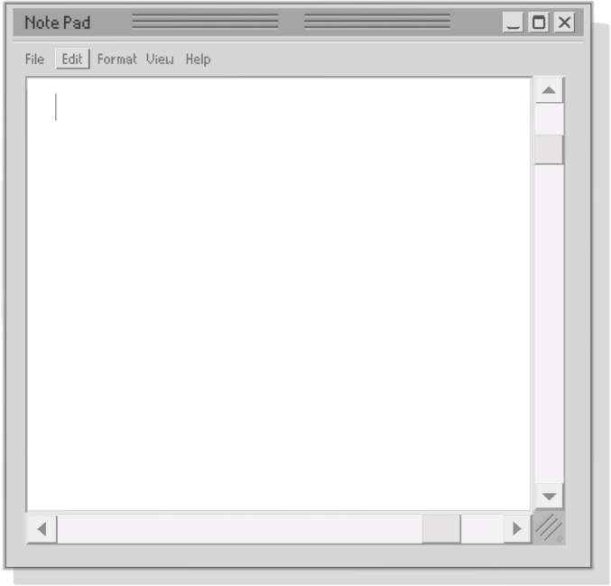

Student Software Engineering

Ik ben Joy, ik ben 18 jaar en studeer Software
Engineering op de haagse hogeschool. Ik zit in mijn
eerste semester van het tweede jaar. Ik maak deze
site voor het vak Webprogramming, Frameworks &
Usability. In mijn vrije tijd houd ik van Gamen,
Kleien, Schilderen, Tekenen, Naaien en dingen doen
met vrienden. Op deze site documenteer ik vooral
mijn programmeer opdrachten, zoals mijn process
van het maken van deze site op mijn Blog pagina.
Mijn vorige opdrachten stel ik ten toon op mijn
portfolio pagina. Veel plezier met het navigeren van
mijn site :)